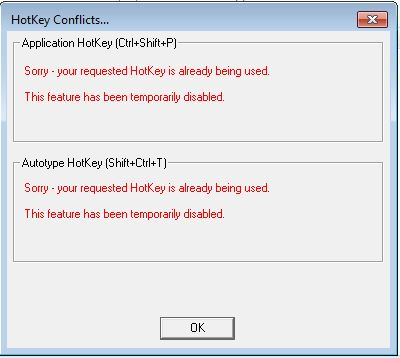
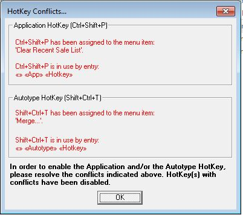
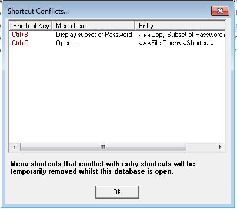

Password Safe allows you to define key sequences (shortcuts) that perform specific operations in the application. This tab allows you to control and review the shortcuts, as follows.
When checked, pressing the keys in the sequence to the right will restore Password Safe from the system tray, if minimized, or bring it to the front, if obscured by other applications.
When checked, pressing the keys "Shift + Ctrl + T" will perform Autotype into the selected field in another Window/application as long as an entry in the database has been selected and the database is not locked. If you enable "Minimize after Autotype" in the Misc Tab and "Lock password database on minimize" in the Security Tab, you will have to unlock the database after Autotype has been performed in order to use this hotkey again.
HotKeys can be defined and registered by any Windows application. However, Windows works on a "first come, first served basis" so that if you run multiple instances of Password Safe then the first instance started will get notified by Windows if its HotKey is used. In addition, if another application has already registered your assigned HotKey before Password Safe starts, then it will continue to 'own' it. HotKeys are released when the owning application either unregisters it or ends but this will not automatically register it to another - there is no "waiting list". The image below is an example where a second instance of Password Safe is started and both HotKeys are active.
Versions of Password Safe prior to 3.42 allowed HotKey and Shortcut values to be defined for menu items even though they were already assigned to the application HotKey or an entry. There were uncertainties as to which menu or entry would be selected on using the shortcut. From version 3.42, conflicts will not be able to be defined.
At start-up, Password Safe will check for conflicts and warn the user. If a HotKey has a conflict, it will be disabled. The image below is an extreme example.
When a database is opened, conflicts will also be detected and, in this case, any menu shortcut that is also assigned to an entry will be temporarily removed. Once the database is closed, it will be reinstated.
To change a shortcut (or add a new one), select the row with the action you'd like to change, then click on the 'Shortcut Key' field for that entry. Any key combination that you select will be defined as the shortcut for this action. For example, to get the File Properties dialog box to appear when Control, Alt and 'p' are pressed, select the "File >> Properties" row, click on the 'Shortcut Key' field, and then press the Control Alt and p key. The text 'Ctrl + Alt + P' will appear in the Shortcut Key field, and once you press OK, the change will take effect. For more details on the keys that can (and cannot) be defined as shortcuts, see here.
Note that you can define shortcuts where there currently are none, as well as replacing the defaults with those of your choosing. The shortcuts will be stored in your preference file, and will be available the next time you start Password Safe.
If you decide to remove a shortcut or revert to the default shortcut for a given action, just select the desired 'Shortcut Key' field and right-click. A popup menu will appear, allowing you to do so. To revert all shortcuts to their default values, click on 'Reset All Program Shortcuts'.